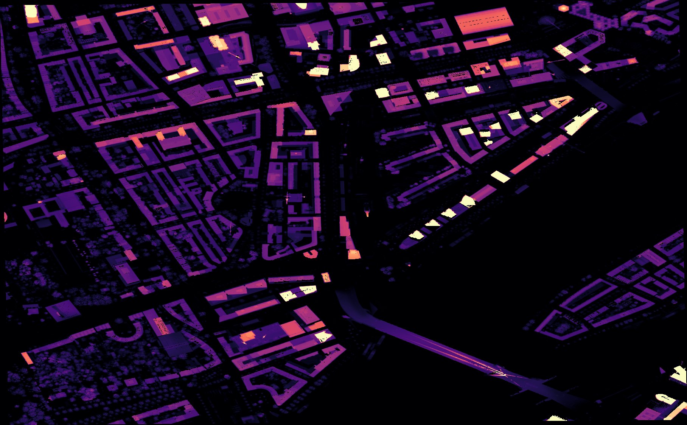
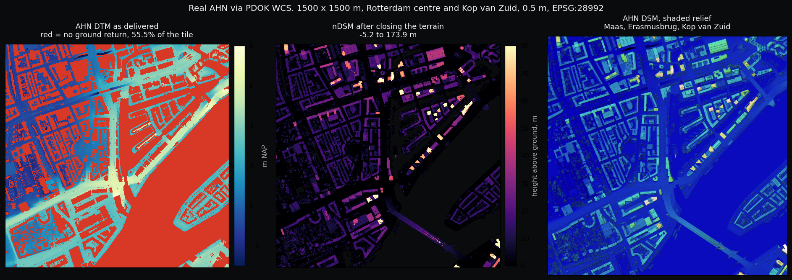

The Netherlands publishes a nationwide LiDAR elevation model (AHN). Subtracting bare earth (DTM) from the surface model (DSM) should give building height, but bare earth carries no returns beneath a roof. 55% of the tile is nodata exactly where it matters. This study reconstructs the missing terrain and measures 1,740 buildings in central Rotterdam.
Building footprints come from the Dutch cadastre (BAG) via PDOK, each carrying a construction year. That turns the height analysis into a temporal one: which era built tall, how the skyline shifted after 2000.
GitHub ↗
Every measured building extruded to its p90 height. Switch between height colouring and construction era to see how the skyline evolved. Use the slider to filter by minimum height.
Two raster layers from PDOK (0.5 m resolution, EPSG:28992): the DSM includes all surfaces, the DTM is bare earth only. Nodata holes in the DTM are filled from nearest valid ground and smoothed over 20 m. Each BAG footprint is eroded 1 m before sampling the nDSM, because edge pixels straddle the wall. The p90 of the remaining sample sits on the main roof plane.

Each building carries a construction year from the Dutch cadastre (BAG). Grouping by era reveals that the post-war reconstruction did not raise the median. What grew is the tail: a handful of towers after 2000.
| Band | Count | Share |
|---|
| Era | Count | Median | Mean | Max |
|---|
A footprint has a distribution of height values. Which statistic you pick as "the height" moves the tallest building by 65 m. The p90 sits on the main roof plane; max captures antenna masts.
| Estimator | Median | p90 | Tallest | <1 m |
|---|---|---|---|---|
| mean | 13.41 | 18.35 | 109.2 m | 3.62% |
| median | 14.42 | 19.01 | 105.0 m | 4.54% |
| p75 | 15.15 | 20.72 | 153.4 m | 3.62% |
| p90 (chosen) | 15.49 | 22.01 | 158.3 m | 2.93% |
| max | 16.32 | 25.04 | 173.9 m | 1.15% |
| BAG id | Built | Roof (p90) | Area |
|---|